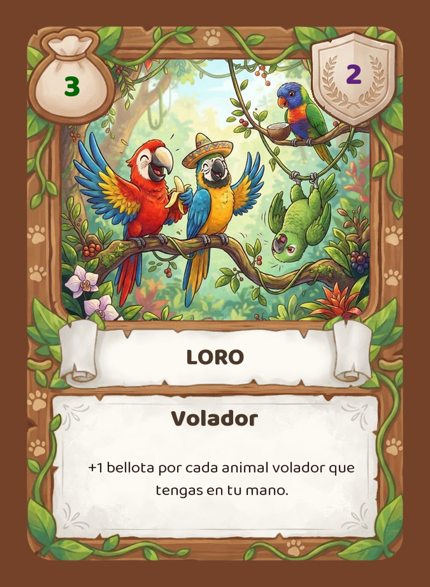
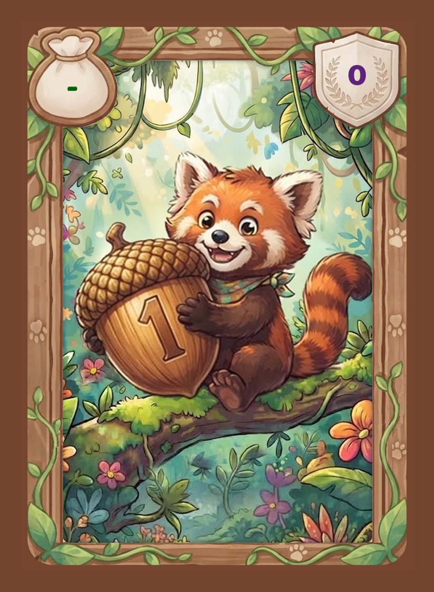

REGLAS DEL JUEGO
2 a 7 jugadores · Edición clásica
En lo más profundo del bosque hay sitio para todos. Monos, loros, delfines y leones buscan un hogar donde vivir tranquilos, y a todos les vuelve locos lo mismo: las bellotas.
Cada jugador cuida de su propia reserva. Empiezas con un puñado de bellotas y tres perezosos muy simpáticos, aunque algo dormilones. Turno a turno invitarás a nuevos animales ofreciéndoles bellotas, y cada uno te ayudará con su habilidad para que lleguen más amigos.
Reunir la colección de cartas que sume más puntos de victoria (PV) cuando termine la última ronda.
| Cartas | Copias |
|---|---|
| 21 especies de coste 4 o menos | 9 de cada una |
| 12 especies de coste 5 o más | 7 de cada una |
| Perezosos | 21 |
| Bellotas de valor 1 | 49 |
| Bellotas de valor 2 | 16 |
| Bellotas de valor 3 | 11 |
| Bellotas de valor 5 | 8 |
En total, 378 cartas.

1 2 3 4 51Coste. Las bellotas que le ofreces para que venga a tu reserva. El Loro cuesta 3.
2Puntos de victoria. Lo que vale al final de la partida. El Loro vale 2 PV.
3Nombre de la especie.
4Hábitat. Un animal puede tener uno o varios.
5Habilidad. Se aplica cada vez que juegas la carta desde tu mano.
Terrestre Volador Acuático
El hábitat va escrito bajo el nombre, y los pergaminos de la carta llevan su color.
Un animal con varios hábitats cuenta para todos ellos. El Pato es acuático y volador a la vez, y sus pergaminos mezclan los dos colores.
Ejemplo. Juegas el Loro teniendo un Pato en la mano. El Loro se cuenta a sí mismo y cuenta al Pato: tienes 2 animales voladores, así que ganas +2 bellotas para este turno.

A todos los animales les encantan las bellotas. No tienen nombre ni texto: su valor es el número grabado en la bellota.
Una bellota nunca se juega. Se queda en tu mano y suma su valor a las bellotas que puedes ofrecer este turno.
La bellota de 1 no se puede conseguir en la reserva, por eso su coste es un guion. Tampoco da puntos.
| Bellota | Valor | Coste | PV |
|---|---|---|---|
| Panda rojo | 1 | – | 0 |
| Perezoso | 2 | 3 | 1 |
| Ardilla | 3 | 5 | 2 |
| Koala | 5 | 7 | 3 |
Muchas habilidades dicen «+2 bellotas». Eso no te da ninguna carta: solo aumenta las bellotas que puedes ofrecer este turno. Las que no uses se pierden.
Llamamos valor de captura a la suma de las bellotas de tu mano y de las que te dan tus habilidades.
Coste 0 y 0 PV. No hace nada al jugarlo, pero te protege: cuando una carta rival te obligue a descartar, puedes descartar un Perezoso en lugar de todo lo que te pedían.
| Especie | Copias en la pila |
|---|---|
| Coste 4 o menos | jugadores + 2 |
| Coste 5 o más | tantas como jugadores |
Elegid el tipo de partida antes de montar la reserva. Está en la página 8.
En tu turno puedes jugar animales y capturar cartas, en el orden que quieras y alternando ambas cosas. Cuando no quieras hacer nada más, terminas el turno.
Ardilla. Antes de nada, si tienes Ardillas en tu descarte, una vuelve a tu mano. Solo una por turno.
Pon delante de ti animales de tu mano, de uno en uno o varios a la vez, y aplica sus habilidades de una en una. Puedes jugar todos los que quieras, o ninguno.
Cuando una habilidad habla de «tu mano», cuenta las cartas que tienes en la mano en ese momento y las que ya has jugado este turno, incluida la propia carta. Si juegas un Mono y un Ornitorrinco, cada uno cuenta al otro. Los animales que robes después no cuentan.
Si una habilidad no se puede cumplir del todo, haz lo que sea posible.
Suma tu valor de captura y úsalo en la reserva:
Las cartas de bellota que usas no se pierden: siguen siendo tuyas y se descartan al final del turno, como el resto de tu mano.
No cuentan para ese límite los animales del Elefante, la Araña o el Flamenco, ni las bellotas del Pingüino o la Tortuga.
Si tienes que robar y tu mazo está vacío, baraja tu descarte y colócalo boca abajo como nuevo mazo. Después sigue robando. Así vuelven a tu mano los animales que capturaste.
Una ronda termina cuando todos los jugadores han jugado un turno. Apuntad las rondas en un papel o llevad la cuenta con un dado.
Ejemplo de turno. Tu mano es Loro, Periquito y tres bellotas de 1.
Juegas el Loro. El Periquito cuenta como 2 voladores y el Loro como 1, así que ganas +3 bellotas. Con tus tres bellotas de 1 tienes un valor de captura de 6.
Capturas un Pingüino por 3 y un Delfín por 3. Los dos van a tu descarte.
Descartas toda tu mano y el Loro jugado, y robas 5 cartas.
Elegid una antes de empezar. La partida termina siempre al acabar la última ronda, de modo que todos juegan el mismo número de turnos.
| Partida | Reserva | Rondas |
|---|---|---|
| Aprendizaje | Solo las especies de coste 4 o menos | 10 |
| Intermedia | Solo las especies de coste 6 o menos | 12 |
| Completa | Todas las especies | 15 |
| Personalizada | Las que queráis | A elegir |
Se montan solo las 21 especies de coste 4 o menos y las tres pilas de bellotas. Las 12 especies caras se quedan en la caja.
Las cartas son más sencillas y no hay casi ninguna que puntúe de forma especial, así que el recuento final es rápido.
Las 30 especies de coste 6 o menos y 12 rondas. Se quedan en la caja el Águila, la Orca y el Oso panda.
Todas las especies y 15 rondas. Da tiempo a que los mazos crezcan y a que las cartas caras lleguen a jugarse varias veces.
Siéntete libre de jugar las rondas que quieras y con los animales que quieras. Si alguna carta no te gusta, puedes prescindir de ella en tus partidas.
Si se agota una pila de la reserva, esa carta ya no se puede conseguir. La partida continúa con normalidad hasta la última ronda.
Cuando el último jugador termina su turno de la última ronda, la partida acaba. Cada jugador junta toda su colección: mazo, mano y descarte.
Gana quien tenga más puntos.
Si hay empate a puntos, gana entre los empatados quien tenga más animales en su colección.
Si también empatan en animales, comparten la victoria.
Estas seis cartas dan puntos extra según el resto de tu colección.
| Carta | +1 PV por cada… |
|---|---|
| Águila | animal volador |
| Oso panda | animal terrestre |
| Orca | animal acuático |
| Albatros | especie distinta de animal |
| Tucán | animal de coste 5 o más |
| Tiburón | carta de bellota, sea cual sea su valor |
Al terminar la partida, la colección de Marta es esta:
| Cartas | PV impresos |
|---|---|
| 1 Águila | 2 |
| 2 Loros | 2 + 2 |
| 1 Periquito | 1 |
| 1 Pato | 1 |
| 1 Mono | 3 |
| 1 Oso panda | 0 |
| 1 Tiburón | 0 |
| 3 Perezosos | 0 |
| 7 bellotas de 1 | 0 |
| 2 bellotas de 2 | 1 + 1 |
| Puntos impresos | 13 |
Total de Marta: 13 + 6 + 5 + 9 = 33 PV.
Para el desempate, Marta tiene 11 animales en su colección.
Devuelves un animal a su pila de la reserva y coges otro de una especie distinta que cueste, como mucho, 2 bellotas más. El animal nuevo va a tu descarte.
Cambia una bellota de tu mano por la del nivel siguiente: de 1 a 2, de 2 a 3 o de 3 a 5.
Coges la bellota de valor 2 de su pila y va a tu mano, así que puedes usarla este mismo turno. Después es una carta más de tu colección.
La Hiena, la Serpiente y el Buitre obligan a descartar a los rivales. Cada carta va al descarte de su dueño.
Regla general. Si hay empate o varias cartas posibles, elige siempre el dueño de la carta que se descarta, nunca quien jugó el animal.
Cada rival enseña su mano y descarta su animal de mayor coste. Si tiene varios empatados en el coste más alto, él elige cuál. Quien no tenga animales no descarta nada.
Cada rival elige un animal de su mano y lo descarta. Después tú eliges uno de esos animales y aplicas su habilidad como si lo hubieras jugado. La carta no cambia de dueño. Si eliges un Flamenco, el animal que cambias ha de ser uno de los tuyos, nunca el Flamenco del otro jugador.
Cada rival elige 2 cartas de su mano y las descarta. Pueden ser animales o bellotas.
El jugador que eliges decide qué bellota te da. Esa bellota va a tu mano y pasa a ser tuya para el resto de la partida. Si no tiene bellotas, enseña su mano y tú coges una bellota de valor 3 de la reserva a tu mano.
Ante la Hiena, la Serpiente o el Buitre puedes descartar un Perezoso en lugar de lo que te piden. Un solo Perezoso cubre las 2 cartas del Buitre. No sirve contra el Pato.
La carta recuperada va a tu mano y puedes jugarla este turno. Puedes recuperar una carta que acabas de conseguir: todo lo que consigues va inmediatamente a tu descarte, sea con bellotas, con la Araña o con el Elefante.
Enseña la carta superior de tu mazo. Si es una bellota o un animal de coste 4 o menos, va a tu mano. Si es un animal más caro, se queda encima del mazo. Si tu mazo está vacío, baraja antes tu descarte para formar el mazo.
Roba 2 cartas y después deja encima de tu mazo una carta cualquiera de tu mano. No tiene que ser una de las que acabas de robar.
El animal que eliges de la reserva es gratis y va a tu descarte. Su habilidad no se aplica.
Puedes combinar sus 3 bellotas con otras y repartirlas entre varias cartas. La única condición es que las bellotas de la Foca se usen en animales acuáticos.
El Mono cuenta animales terrestres y el Ornitorrinco especies distintas. Con 2 Perezosos, un Mono y un Ornitorrinco, el Mono da +4 bellotas y el Ornitorrinco +3.
El Cuervo cuenta cartas de bellota, no su valor.
| Aprendizaje | coste 4 o menos | 10 rondas |
| Intermedia | coste 6 o menos | 12 rondas |
| Completa | todas las cartas | 15 rondas |
Un juego creado por
Gemma y Diego
Gracias a todas las personas que nos apoyaron y nos ayudaron a que este juego saliera adelante.
A quienes probaron las primeras versiones, aguantaron partidas con cartas a medio hacer y nos dijeron con cariño lo que no funcionaba. A quienes propusieron animales, habilidades y reglas. Y a quienes simplemente se sentaron a jugar una partida más.
Este juego también es vuestro.
¡Gracias por jugar!
© 2026 Gemma y Diego. Todos los derechos reservados.
Desarrollado con ayuda de inteligencia artificial.